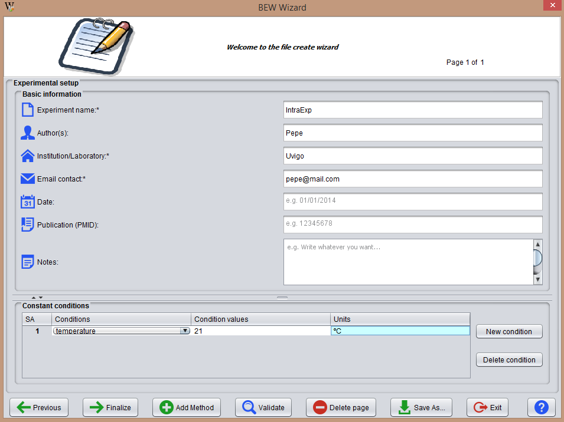
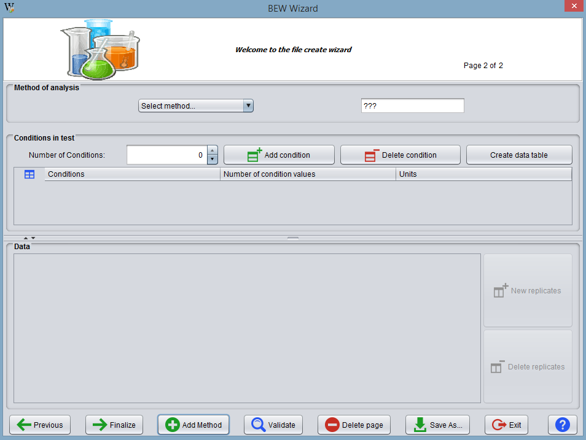
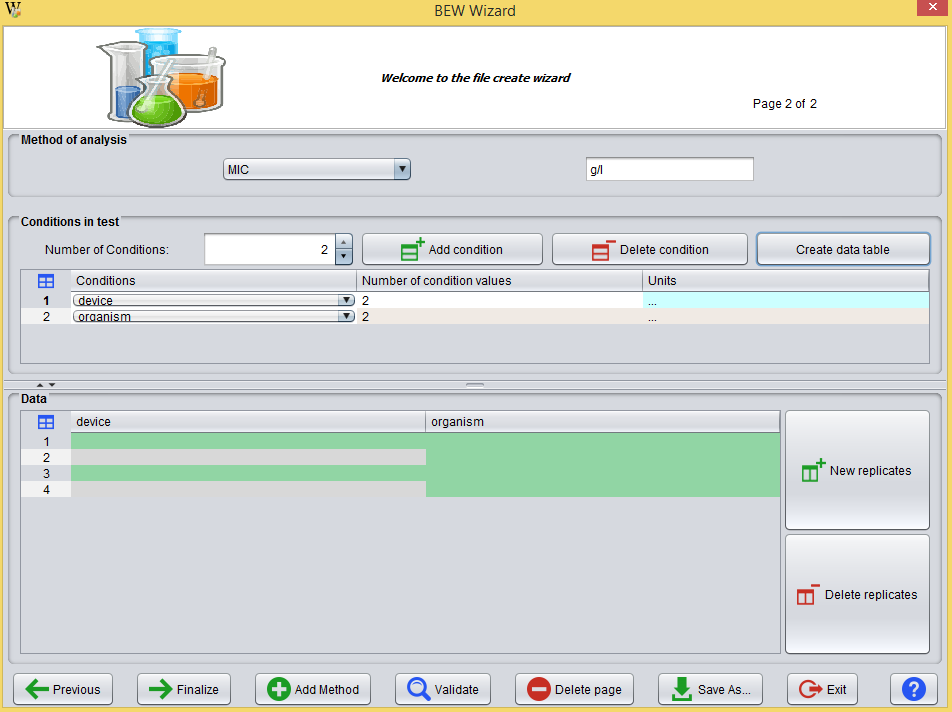
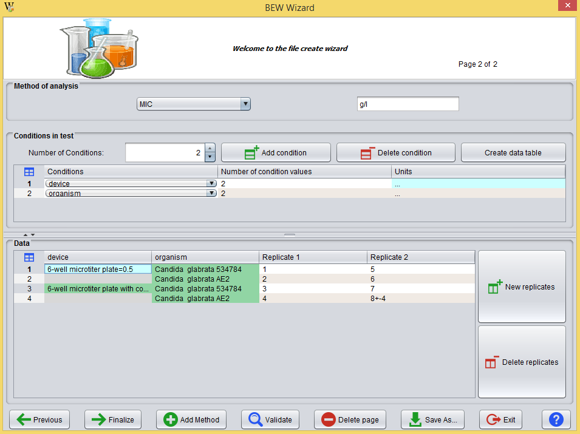

In BEW, the user can create a new Experiment with any number of experimental conditions and including data from several methods of analysis . This process is carried out through multiple dialogues orchestrated as a stepwise Wizard.
At start, the user needs to cover the basic information of the experiment (also called Setup page), shown in the image below:

Here, there are 2 areas of information:
The user must fill in 3 mandatory fields: name of the experiment, name of the institution where it was conducted and email of contact. Additional information about the authors, date of execution and associated publication are welcome.
Constant conditions are conditions that are considered by all the methods of analysis applied.
The user should click on the button 'New Condition', which creates a new condition statment (row in the table). The user should then fill in all new rows (cells in red are uncovered), indicating in the column "Condition name" the name of the experimental condition, in the column "Condition value" the value for this condition, and in the column "Units" the units of measure (if applicable).
The buttons at the bottom of the main window are explained below:
Once the Setup page is covered, the user can decide to end the creation of the experiment without adding any method of analysis for the time being. Otherwise, he should click on "Add Method" button to access the method creation window (or method page).

The window is divided into 3 areas of information:
The user must select the method from the list provided by BEW whilst it may be manually extended (see manage methods section) by the user. In addition, the user can specify the units of measure that are associated to the analysis (if applicable).
The user has to indicate the number of conditions tested by the method of analysis and press the "Add" button. This will create the corresponding table. The table should has as many conditions are created in the table as the previously selected number are created.
Now, the user must specify the name of the conditions. This is done by clicking on the first column of the table.
Similarly, should indicate the number of values for each condition. Keep in mind that the program manages hierarchical (tree-alike) data structures.
The user should also specify the units of measure of created condition (wherever applicable).
Finally, he should click on "Create data table" to create the data table.

After the user specifies the number of conditions and the condition values to be considered, BEW automatically creates the data table. Then, the user has to fill in the cells in green. BEW provides controlled vocabulary for several commom test conditions, but the user may also create conditions of his own (see vocabulary management section).
The user can introduce experimental data by clicking on "New replicate".

Once data insertion is completed, the user can check that all the values are correct (in form and structure) using the "Validate" button. If succeeded, the user is presented with two options: finalize the experiment or keep adding pages for methods of analysis.